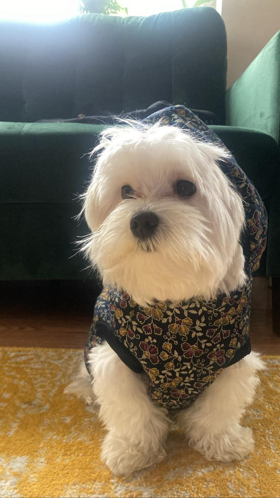

A note from the studio
"It started because nothing fit."
Our first dog, a six-pound Maltese, swam in the smallest jacket we could find at any pet store. So we sewed one. Then a friend asked for one. Then a friend of a friend. Five years later we run a studio of four, sew in batches of forty, and still pattern every new piece on the same six-pound dog who started it all.
"We don't dress dogs up. We dress them well."
— The Barkly studio, Berkeley, California